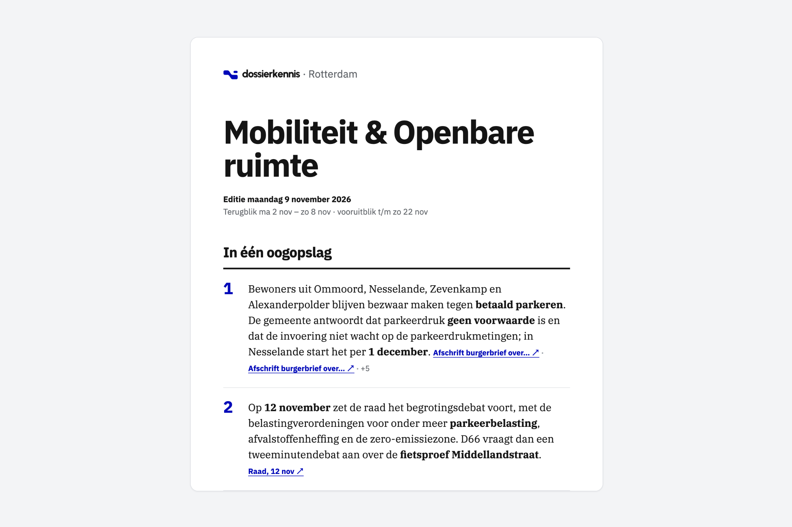
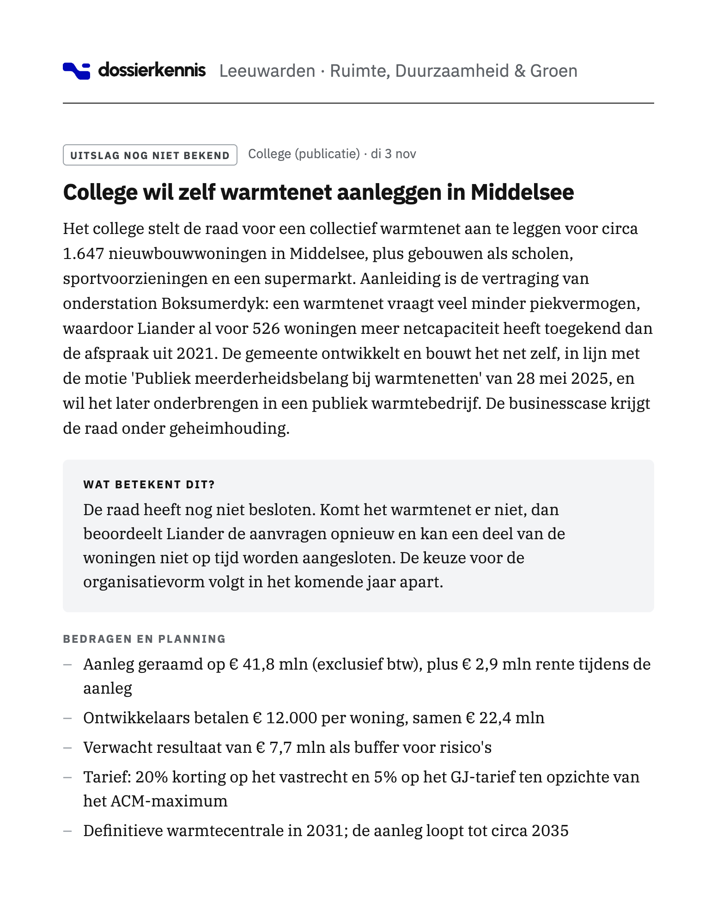
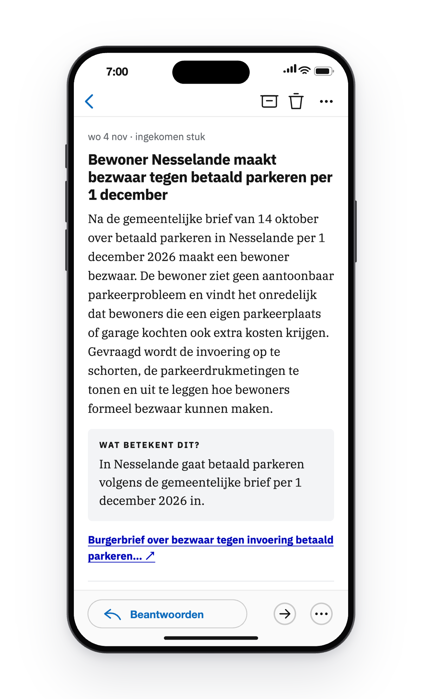

Voor de pers
Dossierkennis start in 188 gemeenten
Hier staan het persbericht, het filmpje en drie schermafbeeldingen. Alles is vrij te gebruiken bij een artikel over Dossierkennis.
Filmpje
MP4, 18 MB. Een editie van Dossierkennis op de telefoon.
Beeld
-

BreedPNG, 2400 × 1600, 0,3 MB Download -

DetailPNG, 1552 × 1970, 0,3 MB Download -

TelefoonPNG, 1200 × 1989, 0,4 MB Download


Persbericht
Nooit meer een belangrijk raadsstuk missen: Dossierkennis start in 188 gemeenten
Elke maandag in je mail: wat de raad besloot over jouw onderwerp, wat het betekent en wat eraan komt. Voor ambtenaren, organisaties en journalisten die op de hoogte willen blijven van wat er in hun gemeenteraad gebeurt.
Amsterdam, [datum]
Vanaf vandaag in 188 gemeenten, elke maandag in je mail
Dossierkennis is vanaf vandaag beschikbaar in 188 gemeenten, samen 76 procent van de inwoners van Nederland. Wie een gemeentelijk beleidsdossier volgt, krijgt met Dossierkennis elke maandag een mail met de belangrijkste informatie van de afgelopen week: wat de raad besloot, wat het college in brieven aan de raad meldde, welke vragen raadsleden stelden en wat er in het lokale en landelijke nieuws over verscheen. Bovenaan staan de drie of vier belangrijkste punten van de week. Elk stuk is kort samengevat. Er staat bij wat er verandert, voor wie, en wanneer de raad verder beslist. Daarna volgt wat er de komende twee weken aankomt: commissievergaderingen, technische sessies en werkbezoeken. Bij elk punt staat een link naar het raadsstuk of het nieuwsbericht. De dienst begon in oktober als test in Amsterdam.
Alles is openbaar, maar niet overzichtelijk
Raadsinformatie is openbaar, maar wat over jouw dossier gaat, staat verspreid over veel plekken: de agenda's van verschillende commissies, brieven van het college, schriftelijke vragen, de begroting en het nieuws. Een overzicht per onderwerp is er niet. Wie wil weten wat er speelt, moet zich elke week opnieuw een weg banen door een oerwoud van informatie.
"In de jaren dat ik bij de gemeente Amsterdam werkte, vond ik het altijd lastig om te weten wat er in de raad speelde op mijn onderwerp. Ik moest goed zoeken en de belangrijkste dingen zelf uit brieven en vergaderingen halen. Dossierkennis is de nieuwsbrief die ik had willen hebben. Ik maakte hem eerst voor mezelf en mijn collega's, en dat beviel zo goed dat ik hem voor elke gemeente wilde maken," zegt Maurijn Rezvani, die Dossierkennis maakt. Rezvani werkte tot 1 november als strategisch adviseur bij de gemeente Amsterdam.
Bij elk punt de bron
Dossierkennis zoekt die stukken bij elkaar en vat ze samen met AI. Een controlestap kijkt of elk citaat en elk getal in de bron staat. Vindt die stap iets niet terug, dan gaat de mail pas weg als een mens het heeft nagekeken. Omdat bij elk punt de bron staat, kan de lezer alles zelf nagaan. Dossierkennis gebruikt alleen openbare stukken en nieuws van bekende media.
Acht edities gratis, daarna vanaf € 3,33 per maand
Per gemeente zijn er drie tot tien dossiers te volgen, van wonen en armoede tot verkeer, jeugdzorg en cultuur. Lezers kiezen één gemeente en tot drie onderwerpen, en eventueel het overzicht van alle onderwerpen. De eerste acht edities zijn gratis, zonder betaalgegevens. Daarna kost het € 4 per maand of € 40 per jaar (€ 3,33 per maand). Voor teams is er een aanbod op maat.
Contact
Maurijn Rezvani
Het filmpje en de schermafbeeldingen zijn vrij te gebruiken bij berichtgeving over Dossierkennis.
Dossierkennis is een dienst van de eenmanszaak van Maurijn Rezvani.